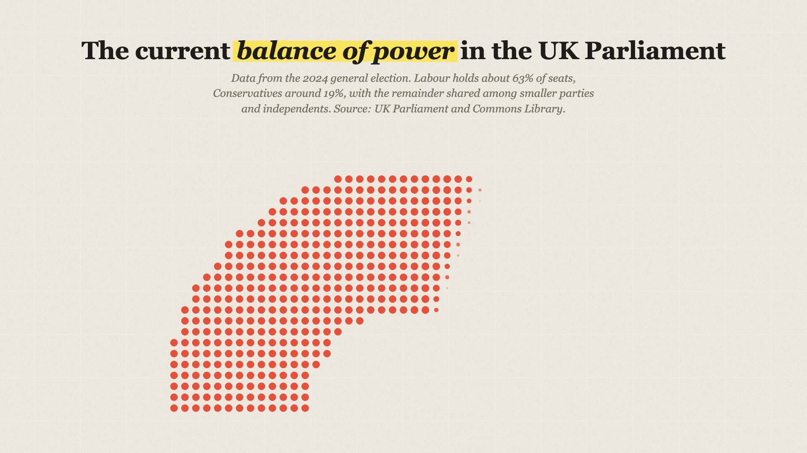
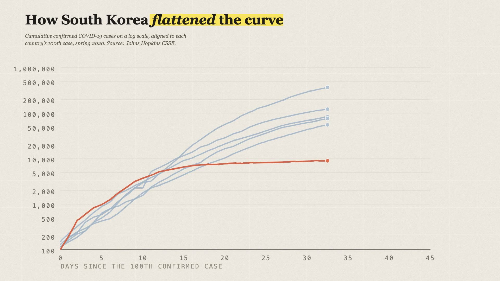

You know the Vox look the second you see it: warm paper, one loud color, edges that wobble like a marker drew them. It looks expensive. It isn't — these three shots came out of Claude Code with three prompts.
This page breaks each chart down to its underlying dynamics:
- Three copy-paste prompts — each one builds a complete chart.
- Three live playgrounds — the actual tricks running in your browser, right after each prompt.
- The simple rules that make a chart read as print instead of PowerPoint.
01Prompt 1 — the bar chart, plus the whole foundation
Prompt one does the heavy lifting. One paste sets up:
- The Remotion project — the video engine everything renders in.
- The paper look — textures, grain, wobbly marker edges.
- The bar chart itself, with real World Bank numbers baked in.
- A knob for everything, and zero randomness so renders never flicker.
First chart: a horizontal bar chart of health spending per person, using these real 2022 World Bank numbers (current health expenditure per capita, in US dollars): United States 12,586 · Canada 6,252 · Germany 6,226 · United Kingdom 5,112 · France 4,858 · Japan 4,202. Headline "America pays more for health care" with one italic word, and a small-print deck that cites: Source: World Bank, WHO Global Health Expenditure Database. It's real cited data, so no demo badge anywhere.
Textures (exact numbers): the whole frame should look printed, not digital. Warm paper base #F7F4EC, with one fine grain overlay across the entire frame: 16% opacity, overlay blend, noise scale 0.72, refreshing every 2 frames. Give the bars wobbly hand-drawn marker edges with an SVG feTurbulence filter: fractal noise, base frequency 5, 3 octaves, displacement scale 4, and freeze the seed — no boiling, the edge holds still. Oversize the filter region so the edges never clip. Then clip a paper-grain speckle inside each bar and multiply it into the fill: noise frequency 0.42, strength 0.34. Text never goes inside the filter.
Animation (exact numbers): headline rises in behind a mask at frame 6, deck at 12, gridlines and baseline fade in at 24. Bars start at frame 40, one after another with an 8-frame stagger, each growing for 46 frames at a steady marker pace that only softens right at the end — like a hand dragging a marker, not a bouncy ease. Dollar values count up over 24 frames as each bar finishes. The yellow marker highlight swipes across the key phrase starting at frame 30, taking 34 frames — slow, like a real hand. 30fps, 180 frames total.
Colors and sizes: hero bar #E0674C for the US — the one bar that matters — every other bar muted blue #A9BFD2, ink text #1C1B19, deck #5A5648, axis ticks #6E6960, gridlines #C9C3B4, highlight yellow #FCE24A, paper base #F7F4EC. Bars 66px thick with a 46px gap, plot area 1180x620 starting at x360 y321, headline 48px, values 53px in the serif. One hero color per chart; everything else stays quiet.
Try it live — clean digital vs the full paper look
Same chart, two costumes. Flip the preset, then switch the layers on one at a time — every one of these is a real SVG filter running right now:
What each layer does:
- Paper base — a warm cream sheet instead of white. Turn it off and everything goes clinical.
- Marker edge — noise nudges the bar edges around so they wander like ink.
- Grain in fills — tiny dark speckles inside each bar, like ink soaked into paper. Without it the bars float; with it they're printed.
- Grain over frame — one quiet dusting across everything, words included. It glues the layers into a single sheet.
Compositions
- BarChartV2
- PieChartV2
- LineChartV2
- DonutChart
Props
02Prompt 2 — the parliament seat chart
Chart two reuses everything chart one built. The prompt only describes what's new:
The lattice: important — do not place the dots along curved rings like every default parliament chart does. Build them on a straight up-and-down grid (aligned vertical columns and horizontal rows) and carve the half-circle shape out of that grid, so the rows and columns line up like halftone print. Sort the seats once by angle, left to right, and use that one order for both the party coloring and the reveal — never two different orders.
Animation (exact numbers): reveal the seats as a single wave sweeping left to right across the chamber over 100 frames, starting at frame 40. Each dot pops in with a small, crisp spring — damping 19, stiffness 280, mass 0.6, no clamping — that lands almost flat: this is a chart about nobody reaching a majority, so no bouncy cartoon energy. Don't pass a duration to the spring; let the physics run, and stagger each seat by its position in the angle-sorted order (that works out to roughly thirty seats mid-pop at any instant — a travelling wave, not a queue). After the seats settle, draw in a dashed majority line at seat 326 starting frame 158 with a small label, then leader lines out to each party's name and count from frame 150, labels fading in as their lines land. 210 frames total.
Colors and geometry: Labour #E24B37, Others #B7BBC2, Conservative #57A5DE, ink #1C1B19 for text and the majority line, same paper base as chart one. Chamber centered at x960 y973, outer radius 571, grid spacing 26, dot radius 9. Party names, seat counts, dot size, spacing, the majority threshold, dash pattern, and every timing: all editable props in the Studio panel.
Try it live — the lattice, the pop, the wave
There is no wave animation in the code. The wave emerges. Play with what actually makes it:
What's happening in there:
- Every seat runs the same tiny spring: grow, maybe a small bounce, settle.
- Each seat starts a beat later than its neighbour, in left-to-right order.
- Springs + delays = a wave. That's the whole trick.
- The readout shows the one number that sets the feel: seats mid-pop at once. Around 20–40 reads as a wave. Under 5: machine-gun. Way over: mushy fade.
And the lattice buttons:
- Rings copy the room — it reads like a stadium map.
- The grid copies the page — it reads like halftone print. That's the Vox tell.
- The half-circle is just a rule: keep the grid dots that fit inside the chamber, drop the rest.

03Prompt 3 — the line chart with the boil
Last chart. Only two new ideas — honest timing, and the boil:
Data: pull the real Johns Hopkins cumulative confirmed case numbers for the United States, Spain, Italy, Germany, the United Kingdom and South Korea, and align every country to day 0 = the first day it reported at least 100 cumulative cases, through day 45. South Korea is the red hero line that flattens around ten thousand while everyone else keeps compounding (the US ends day 45 around 743,000 — sanity-check against that). Bake the fetched numbers into the props as plain day-by-day arrays so the render never depends on the network.
Animation: draw the lines on left to right with a small dot riding each line's head, and make sure every head sits on the same day at the same moment — rebuild each line every frame from only the days that have happened so far, so no line races ahead just because its path is longer. The playhead advances at the same steady marker pace as the bars. Country labels fade in right as each line arrives at its end, and push overlapping labels apart so they never collide.
The boil (exact numbers): give the strokes a living hand-drawn simmer: run two SVG turbulence fields — fractal noise, base frequency 0.022, 2 octaves — on seeds n and n+1, and crossfade between them every 4 frames with the displacement at scale 2.5. Blend, don't swap: regenerating the noise every few frames just buzzes. Keep the two noise weights always adding up to one so the lines don't drift sideways mid-blend, divide the displacement by the length of the weight vector so the roughness doesn't pulse at the middle of each blend, and give me a freeze toggle so I can compare boil on against boil off. Derive the seeds from the frame number, never randomness.
Colors and sizes: hero line #E0674C for South Korea at 6.5px, every other line muted blue #A9BFD2 at 5px and slightly lower opacity, ink #1C1B19, same paper base, same grain passes. Stroke width, boil strength and speed, the day window, tick ladder, and all the data arrays: editable props in the Studio panel.
Try it live — boil on, boil off
A fully drawn chart, living. Three linework modes — watch the edges, especially the flat red stretch:
- The line itself never moves. Only its edge breathes.
- Two noise textures take turns nudging the edge, crossfading into each other.
- Blend them and each frame is related to the last: a calm simmer.
- Swap them with no blend and every frame is a stranger: the buzz you just saw.
Two small rules keep the boil honest:
- The two noise weights always add up to one — otherwise the whole shape slides sideways mid-blend.
- The wobble gets a tiny boost mid-blend — otherwise the roughness visibly pulses.

The whole thing in one line
Three prompts into Claude Code: one that builds the paper-and-marker foundation around a real-data bar chart, one that carves a parliament out of a straight grid and sweeps it in, and one that teaches the line chart to simmer — paper + turbulence + grain + one hero color + cited data, everything a prop, nothing random.
Takeaways
- Front-load the foundation. Prompt one builds the project, the paper, the wobble and the knobs. That's why prompts two and three stay short.
- The look is layers. Paper under everything, wobble on the shapes, grain inside the fills, one dusting over the whole frame.
- Wobble has a budget. A little on data, more on decorations, none on scaffolding or words.
- The grid is the Vox tell. Seats on a straight grid read as print; seats on rings read as a stadium map.
- Blend noise, never swap it. Crossfading noise breathes; regenerating it buzzes.
- Real data argues harder. World Bank, Parliament, Johns Hopkins — cited on screen, no demo badge needed.